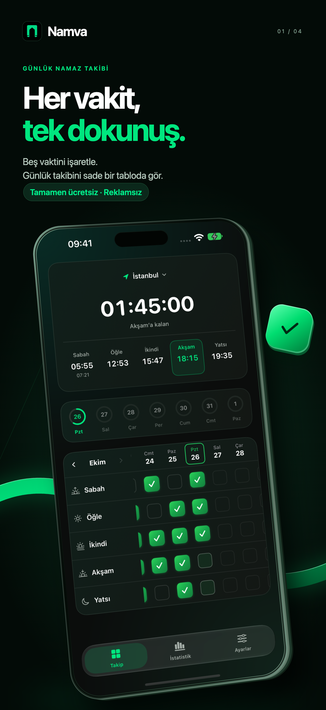

Namaz takibi · iPhone ve iPadHer vakit,
Tamamen ücretsiz · Reklamsız · Aboneliksiz
Her vakit,
tek dokunuş.
Tamamen ücretsiz · Reklamsız · AboneliksizBeş vaktini sade bir tabloda işaretle. Şehrinin namaz vakitlerini gör, sana uygun hatırlatmalar seç ve kayıtlarına haftalık, aylık veya yıllık olarak bak.

Takibin bir arada
Haftalık tablo, aylık takvim ve yıllık görünümle işaretlediğin vakitleri keşfet.
Vaktini hatırla
Vaktinde veya 15, 30, 60 dakika önce hatırlatma al. Bildirimden kıldım veya kılmadım diye yanıtla.
Ana ekranından takip et
Üç widget tasarımıyla vakitleri gör ve namazlarını işaretle. Kıble pusulasıyla yönünü bul.
Kayıtların seninle
Hesap açman gerekmez. İsteğe bağlı iCloud yedeklemesiyle kayıtlarını koru; dosya olarak dışa aktar veya yedekten geri yükle.